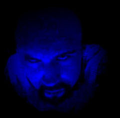
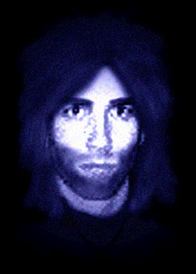
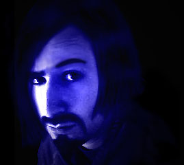
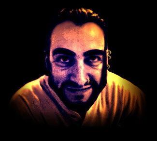
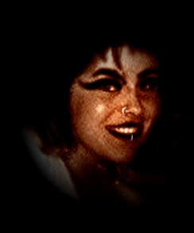
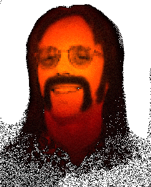

THE BAND
THE BANDGIVES YOU ALL THE FACTS
(CLICK ON THE PHOTOS TO TALK TO YOUR IDOLS)
THE BAND
POSITION:
Vocals / Lyrics
Lemmy
Favourite colour: Black
Favourite Frilly album: The Pink EP
Greatest moment: Liverpool-Manchester at Wembley -83
Worst moment: Liverpool-Westham -92
Will never do: Get a haircut
Describe yourself with one word: Bastard
FAMOUS QUOTES:
"-Trent Reznor is a girl."
"-I'd like to do an unplugged MTV show. No, really!"
STORY:
CC McNasty was born on a farm in southern Wales and his parents wanted
him to grow up in the old family tradition. I.e. they wanted him to be a farmer.
CC did not want to become a farmer.
CC began dressing weirldy and started to sing in a very loud voice. This was in 1987 and since CC was into
hardrock he had really long and greasy hair and walked around in a leather jacket.
He's still very much into hardrock.
 NAME: MC Evil
POSITION:
Knob twiddler
The Ruhr-area in Germany
Favourite colour: Black
Favourite Frilly album: Mano a Mano
Greatest moment: Every day is a party!
Worst moment: In the tour bus from Berlin to London with only one CD.
George Michael. Living hell.
Will never do: Go sunbathing
Describe yourself with one word: Evil
FAMOUS QUOTES:
"-Wow, a machinegun! If we sample it and speed it up we've got a funky rhythm!""
"-Play it backwards at half speed and you can almost hear the vocals. Too mainstream."
STORY:
Meanwhile, MC Evil was training with his guru in Tibet.
In Tibet the men wear dresses and seem to have an attraction towards shaving their heads.
As you can imagine MC was in heaven, but like they say: all good things must come to an end
and he went home to Wales in the summer of '87. He met CC in the local pub and they started
buying each other beer. After a couple of pints they got bored and decided to start a band instead.
 NAME: Steve Metal
POSITION:
Guitar warior
Yngwie Malmsteen
Favourite colour: Black
Favourite Frilly album: Rock On!
Greatest moment: Got me first guitar in -75
Worst moment: Never had one
Will never do: Play "Sweet home Alabama"
Describe yourself with one word: Rocker
FAMOUS QUOTES:
"-Yngwie is God. That's just the way it is."
"-Stairway to Heaven? My record is 35 seconds flat."
"-Give me a guitar and I'll give you a headache. Without hitting you."
STORY:
CC remembered his good friend Steve Metal
who, according to CC, was "one hell of a guitar-player"
(according to Welsh standards anyone who can remeber the chords for
"Smoke on the water" qualifies for one hell of a guitar-player).
They phoned him from the pub and he played them some riffs over the phone. CC thought
it sounded like hell, and that was just what they were looking for.

NAME: Dave Helmet
POSITION:
Guitar hero
Poison
Favourite colour: Black
Favourite Frilly album: Leather and Lace
Greatest moment: The release party for Leather and Lace
Worst moment: The day after
Will never do: Chase away the groupies
Describe yourself with one word: Charming
FAMOUS QUOTES:
"-Are you trying to tell me you're one of our groupies? Come on, you're too ugly!"
"-When you are a rockstar you have to live like one. YEAH! Trash the hotelroom!"
STORY:
Steve felt that only one guitar-god wasn't enough for the band, so they sent word to
CC's second cousin Dave Helmet who was not only a local guitar-guru of some fame, but also looked
very nice. At the time he was working at the local library where he used to bother visitors
by playing air-guitar behind their backs (This explains why he's so good at all the
classic rock-poses).
 NAME: Ben McPetting
POSITION:
Dancer
INFLUENCES:
Very special German movies
Favourite colour: Purplish green
Favourite Frilly album: The new one
Greatest moment: Joining the band
Worst moment: Beaten up by skinheads, Brighton '82
Will never do: Loose the rhythm
Describe yourself with one word: Funky
FAMOUS QUOTES:
"-Guys, let's do a rap-song!"
"-Ok, how about a tribute to Marilyn Manson then?"
"-Elvis?"
STORY:
Dave and MC thought it would be nice to have a drummer in the band, so
they put in an ad in the local paper. After several hours of auditioning
they decided to drop the whole idea, but at that very moment they heard
something that Dave later described as "the mother of all funky rhythms from hell".
Naturally the guys had to investigate, and they found the local cleaner
thrashing a toilet with his broom. They hired him on the spot. Later they found out
he's a hell of a dancer.
 NAME: Brixton
POSITION:
Manager
Gabber
Favourite colour: Black
Favourite Frilly album: Leather & Lace
Greatest moment: Joining the band in '97
Worst moment: Was asked to coach Back Street Boys
Will never do: Pass a metal-detector test
Describe yourself with one word: Bad
FAMOUS QUOTES:
"-Who's this? MTV? You want to do a Frilly Weekend? You can't afford it! -click-"
STORY:
Brixton joined the band earlier this year to take care of business. She knows everyone
who's anybody in music biz.
 NAME: Stanley Winterbottom
POSITION:
Producer
Zappa, Hendrix, Doors, you name it.
Favourite colour: Yellow
Favourite Frilly album: Frilly Forever
Greatest moment: Got Hendrix plectrum at a concert.
He was NOT amused.
Worst moment: Being arrested at Woodstock '74
Will never do: Give up the fight
Describe yourself with one word: Groovy
FAMOUS QUOTES:
"-Take it easy guys. Let's just sit down and have a smoke. Everything will be alright."
"-Kumbaya my Lord, Kumba ya."
STORY:
Stan met the band at one of those noisy rock festivals back in '84. At a rather wild party
the guys started singing uncontrollably, and Stan recorded it on his walkman.
The next day he brought it home to his studio and remixed it into what we today call "Nuclear Power",
one of Frilly's greatest hits. When the band heard it they instantly sacked their old producer and
hired Stan. Not because he was more talented, but because he was cheaper.